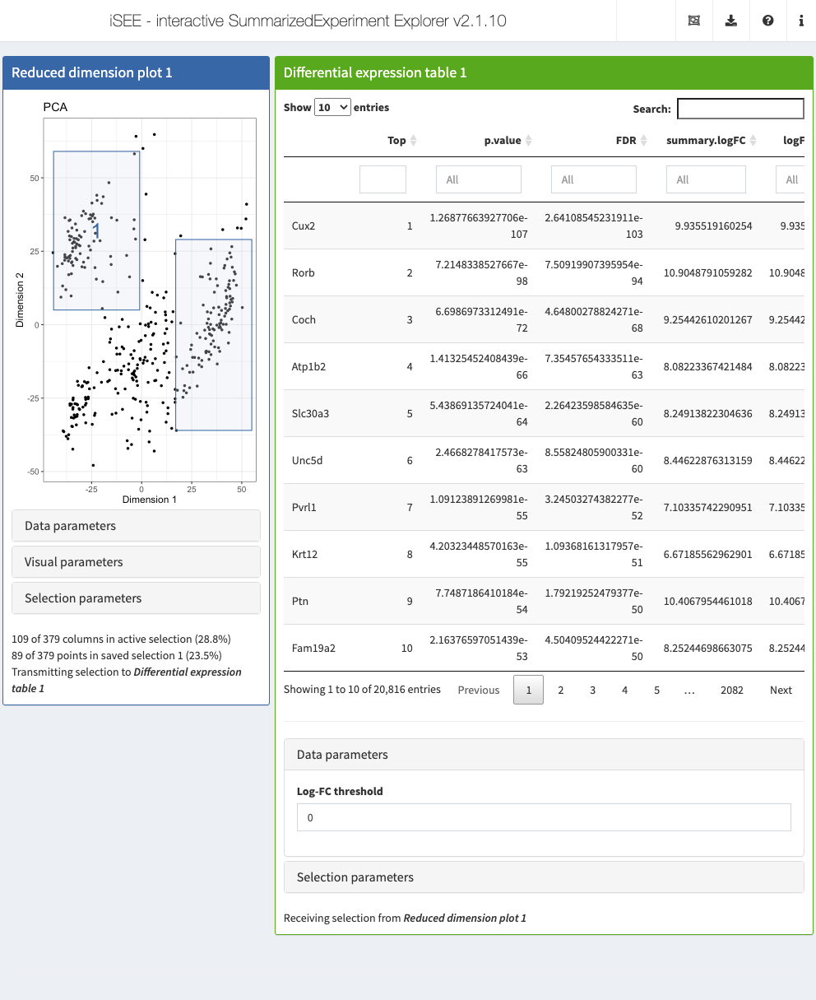

Chapter 6 Dynamic differential expression
6.1 Overview
In this case study, we will create a panel class to dynamically compute differential expression (DE) statistics between the active sample-level selection and the other saved selections from a transmitting panel.
We will present the results of this computation in a DataTable widget from the DT package, where each row is a gene and each column is a relevant statistic (\(p\)-value, FDR, log-fold changes, etc.).
The class proposed here is the basis of the DifferentialStatsticsTable from iSEEu.
6.2 Class basics
First, we define the basics of our new Panel class.
As our new class will be showing each gene as a row, we inherit from the RowTable virtual class.
This automatically gives us access to all the functionality promised in the contract,
including interface elements and observers to respond to multiple selections.
We also add a slot specifying the log-fold change threshold to use in the null hypothesis.
Any new slots should come with validity methods, as shown below.
library(S4Vectors)
setValidity2("DGETable", function(object) {
msg <- character(0)
if (length(val <- object[["LogFC"]])!=1L || val < 0) {
msg <- c(msg, "'NGenes' must be a non-negative number")
}
if (length(msg)) {
return(msg)
}
TRUE
})It is also worthwhile specializing the initialize() method to provide a default for new parameters.
We hard-code the ColumnSelectionType setting as we want to obtain all multiple selections from the transmitting panel,
in order to be able to perform pairwise DE analyses between the various active and saved selections.
(By comparison, the default of "Active" will only transmit the current active selection.)
We also define a constructor to conveniently create new instances.
6.3 Setting up the interface
The most basic requirement is to define some methods that describe our new panel in the iSEE() interface.
This includes defining the full name and desired default color for display purposes:
setMethod(".fullName", "DGETable", function(x) "Differential expression table")
setMethod(".panelColor", "DGETable", function(x) "#55AA00")We also add interface elements to change the result type and the number of genes.
This is most easily done by specializing the .defineDataInterface() generic.
We paste0 the name of our panel to the name of any parameter to ensure that the ID is unique to this instance of our panel.
library(shiny)
setMethod(".defineDataInterface", "DGETable", function(x, se, select_info) {
plot_name <- .getEncodedName(x)
list(
numericInput(paste0(plot_name, "_LogFC"), label="Log-FC threshold",
min=0, value=x[["LogFC"]])
)
})By default, all RowTables hide their multiple column selection parameter choices.
This considers the typical use case where RowTables respond to a selection of rows rather than a selection of columns.
For DGETables, we need to flip this around by specializing .hideInterface() so that the unresponsive row selection parameters are hidden in the interface while the useful column selection parameters are visible.
setMethod(".hideInterface", "DGETable", function(x, field) {
if (field %in% c("RowSelectionSource", "RowSelectionType",
"RowSelectionSaved", "RowSelectionDynamicSource")) {
TRUE
} else if (field %in% "ColumnSelectionSource") {
FALSE
} else {
callNextMethod()
}
})A more advanced version of this panel class might consider responding to a row selection by only performing the DE analysis on the selected features.
In such cases, we would not need to hide RowSelectionSource, though we will leave that as an exercise for the curious.
6.4 Creating the observers
We specialize .createObservers to define some observers to respond to changes in our new interface elements.
Note the use of callNextMethod() to ensure that observers of the parent class are also created;
this automatically ensures that we can respond to changes in parameters provided by RowTable.
setMethod(".createObservers", "DGETable",
function(x, se, input, session, pObjects, rObjects)
{
callNextMethod()
plot_name <- .getEncodedName(x)
.createUnprotectedParameterObservers(plot_name,
fields="LogFC",
input=input, pObjects=pObjects, rObjects=rObjects)
})The distinction between protected and unprotected parameters is less important for Tables;
as long as the types of the columns do not change between renderings, any column or global selections (i.e., search terms) are usually still sensible.
6.5 Making the table
When working with a RowTable subclass, the easiest way to change plotting content to override the .generateTable method.
This is expected to generate a data.frame in the evaluation environment, returning the commands required to do so.
In this case, we want to perform one-sided \(t\)-tests between the active selection and any number of saved selections.
We will use the findMarkers() function from scran to compute the desired statistics.
This performs all pairwise comparisons, so is not as efficient as could be, but it will suffice for this demonstration.
setMethod(".generateTable", "DGETable", function(x, envir) {
empty <- "tab <- data.frame(Top=integer(0), p.value=numeric(0), FDR=numeric(0));"
if (!exists("col_selected", envir, inherits=FALSE) ||
length(envir$col_selected)<2L ||
!"active" %in% names(envir$col_selected))
{
commands <- empty
} else {
commands <- c(".chosen <- unlist(col_selected);",
".grouping <- rep(names(col_selected), lengths(col_selected));",
sprintf(".de.stats <- scran::findMarkers(logcounts(se)[,.chosen],
.grouping, direction='up', lfc=%s)", x[["LogFC"]]),
"tab <- as.data.frame(.de.stats[['active']]);"
)
}
eval(parse(text=commands), envir=envir)
list(commands=commands, contents=envir$tab)
})Readers may notice that we prefix internal variables with . in our commands.
This ensures that they do not clash with global variables created by iSEE() itself
(which is not an issue when running the app, but makes things difficult when the code is reported for tracking purposes).
6.6 In action
Let’s put our new panel to the test.
We’ll use the sce object from Chapter 4, which includes some precomputed dimensionality reduction results.
The plan is to create a (fixed) reduced dimension plot that will transmit to our DGE table.
We set up an iSEE instance with an existing brush on the former to trigger computation of differential results by the latter.
# Setting up multiple active and saved brushes.
rdp <- ReducedDimensionPlot(PanelId=1L,
BrushData = list(
xmin = 17, xmax = 55, ymin = -36, ymax = 29,
coords_css = list(xmin = 300L, xmax = 450L, ymin = 170L, ymax = 404L),
coords_img = list( xmin = 375L, xmax = 562, ymin = 212, ymax = 505L),
img_css_ratio = list(x = 1, y = 1),
mapping = list(x = "X", y = "Y"),
domain = list(left = -49, right = 57, bottom = -53, top = 70),
range = list(left = 49, right = 570, bottom = 580, top = 31),
log = list(x = NULL, y = NULL),
direction = "xy", brushId = "ReducedDimensionPlot1_Brush",
outputId = "ReducedDimensionPlot1"
),
SelectionHistory = list(
list(
xmin = -44, xmax = -1, ymin = 5, ymax = 59,
coords_css = list(xmin = 57L, xmax = 225L, ymin = 64L, ymax = 254L),
coords_img = list(xmin = 71, xmax = 281, ymin = 80L, ymax = 317),
img_css_ratio = list(x = 1, y = 1),
mapping = list(x = "X", y = "Y"),
domain = list(left = -49, right = 57, bottom = -53, top = 70),
range = list(left = 49, right = 570, bottom = 580, top = 31),
log = list(x = NULL, y = NULL),
direction = "xy", brushId = "ReducedDimensionPlot1_Brush",
outputId = "ReducedDimensionPlot1"
)
)
)
dget <- DGETable(ColumnSelectionSource="ReducedDimensionPlot1",
PanelWidth=8L, DataBoxOpen=TRUE)
app <- iSEE(sce, initial=list(rdp, dget))